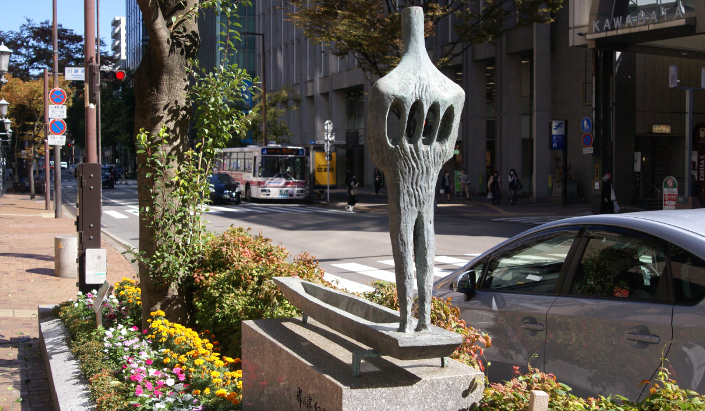
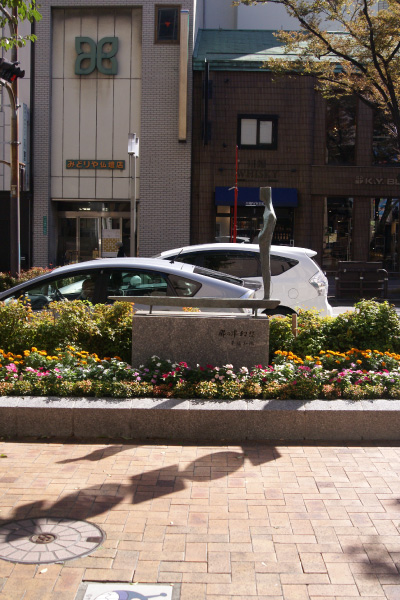
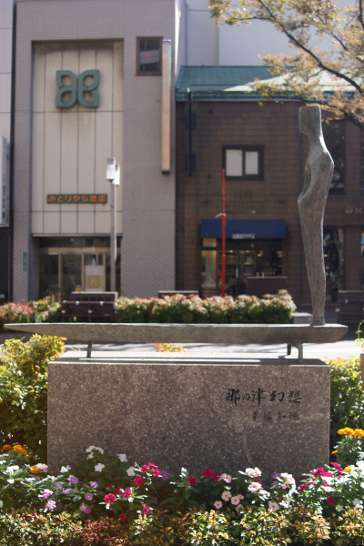
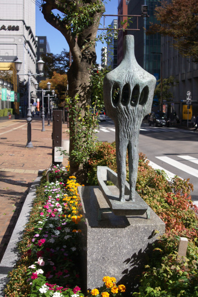
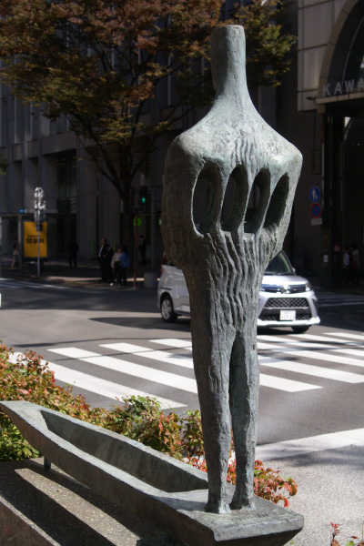
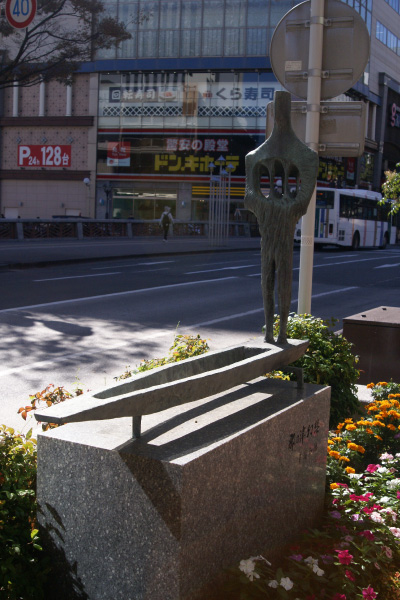

豊福 知徳
    
船に乗った人を表現したこの作品。とても寂しさを感じる。福岡県久留米市出身の豊福知徳。
1960年から43年間に渡ってミラノを拠点に国際的な活躍を展開した。彼の作品の数々は、
ニューヨーク近代美術館、東京国立近代美術館、オールブライト=ノックス美術館、ローマ国
立近代美術館など世界各国の博物館に所蔵されている。彼の作品は日本古来の伝統的な形の概
念に現代的感性を融合させたものであり、彫刻に卵型の穴をあけたレリーフが彼の代名詞だ。